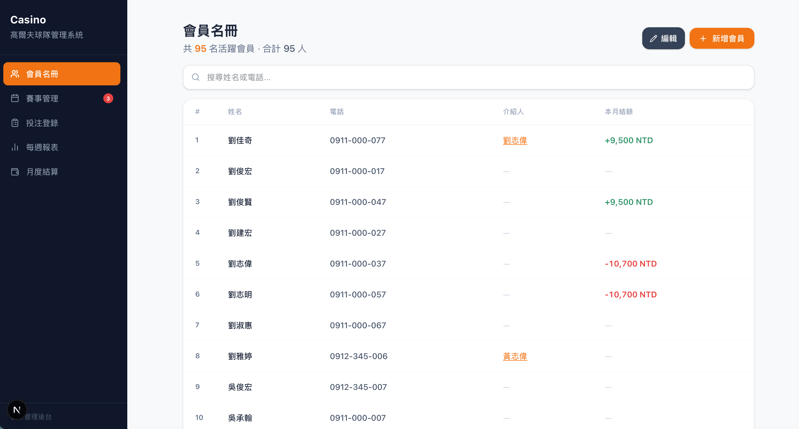
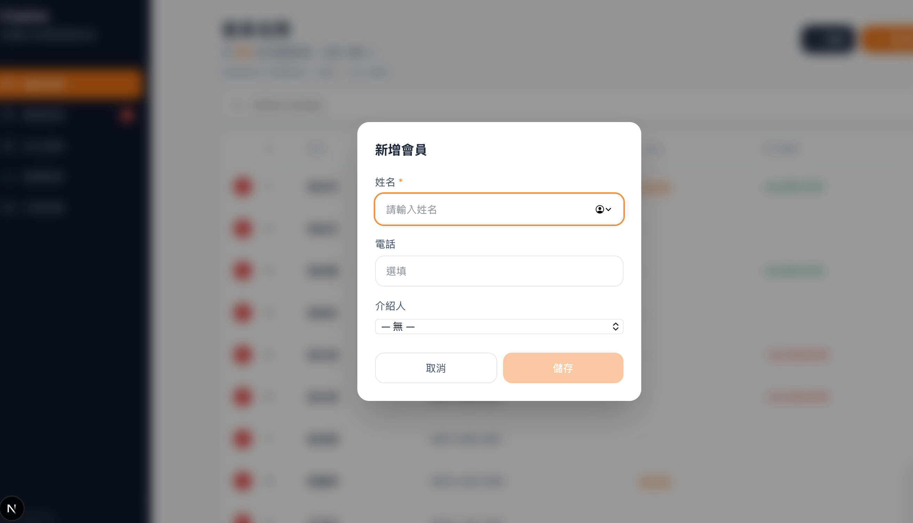
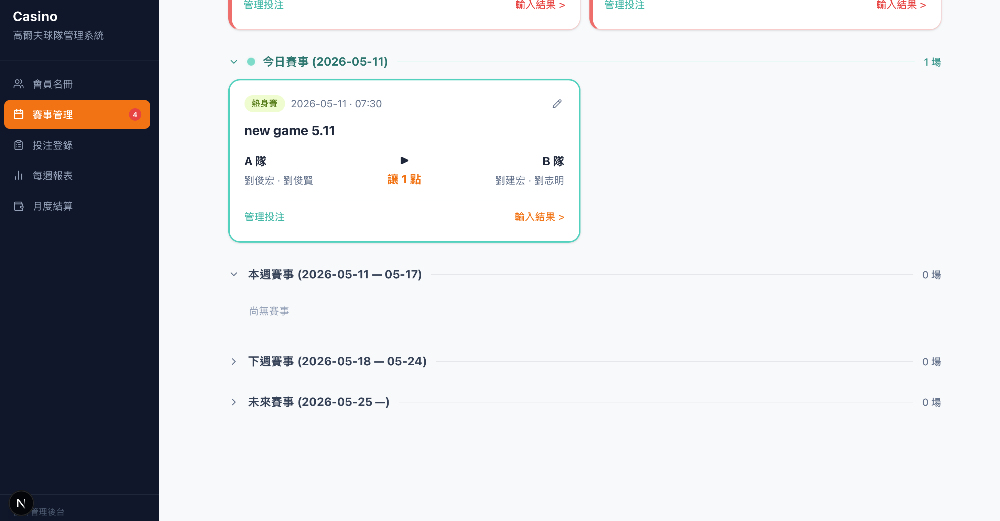
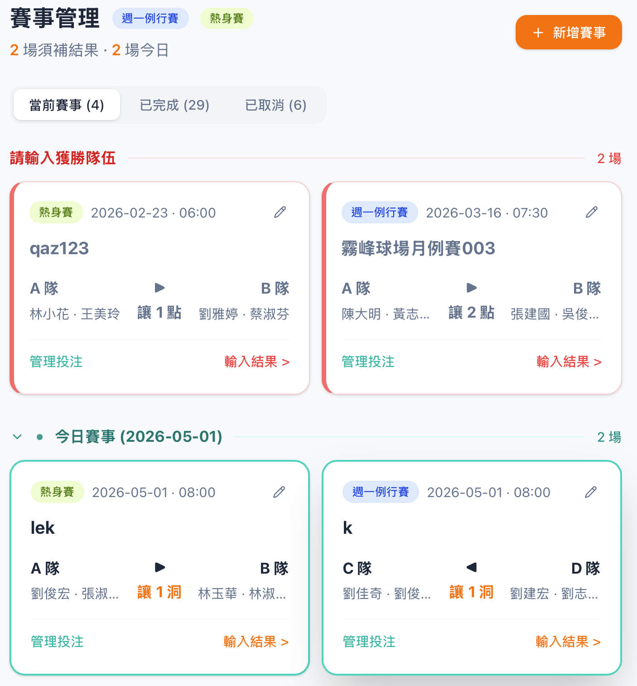
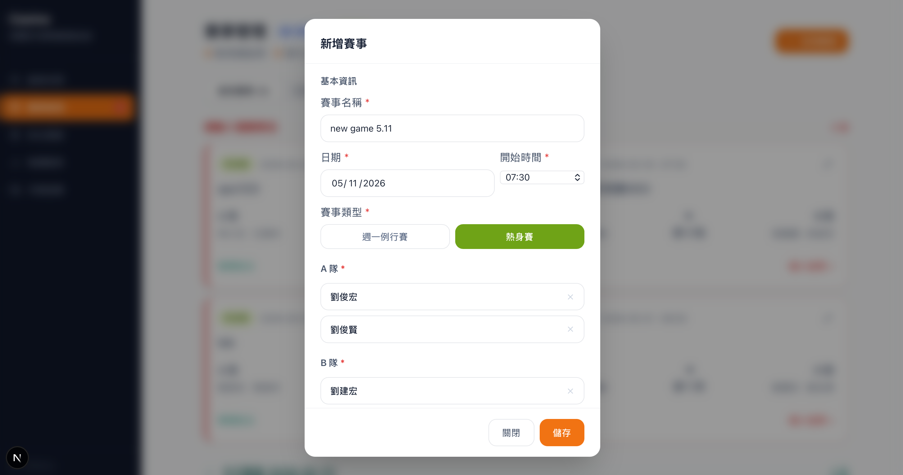
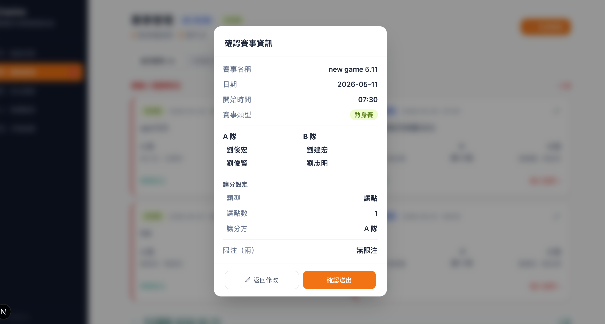
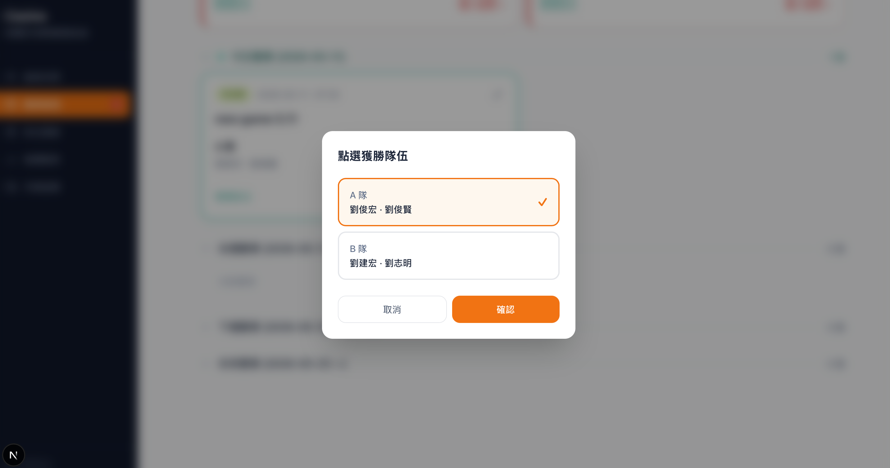
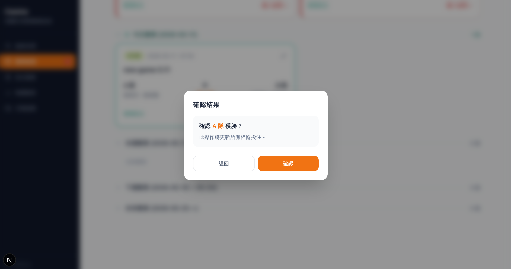
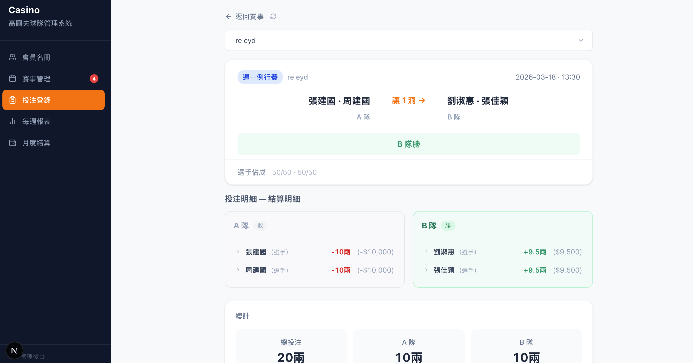

Owner： V Lin · For： 工程團隊 · 2026.7.11
不熟悉本球隊運作方式，可先閱讀附錄 B（球隊如何比賽與下注）與附錄 C（加強盤）。若只想快速掌握第一階段的完整範圍，請參閱第 6 章節。
本系統用來取代某私人高爾夫球隊目前以人工進行的投注結算流程。目前由一位會計從群組聊天中讀取 85 位會員的投注、登錄至 Excel，再手動計算每場比賽誰輸誰贏。本系統將此流程自動化：會計登錄投注與比賽結果，系統即時計算每位會員的輸贏與累計餘額。
這是第一階段（見第 2 節），範圍刻意收斂。完成此階段由兩項標準定義：
本產品將分三個階段建置。目前只建置第一階段。 現階段不建置第二或第三階段的功能，但架構上請確保第二、三階段不會被封死，成本低廉的前瞻性設計可先做。
| 階段 | 內容 | 狀態 |
|---|---|---|
| 第一階段 | 面向會計、單一球隊的工具。登錄投注、登錄結果、計算結算、產生報表。 | 本文 |
| 第二階段 | 面向會員：會員查看自己的資料並自行下注。 | 未來 |
| 第三階段 | 擴展至多個球隊，每隊各有自己的規則與費率。 | 未來 |
本階段的單一球隊為 Casino 高爾夫球隊；請勿將球隊專屬規則或費率寫死（hard-code）於程式邏輯中——應以設定（configuration）方式保存，以利未來擴展至其他球隊。第一階段的完整scope 見第 6 節。
| 使用者 | 人數 | 角色 |
|---|---|---|
| 會計 | 1 | 主要且幾乎唯一的使用者。登錄投注、封盤、執行自動派注、登錄與更正結果、產生報表、管理每週與每月結算。 |
| 管理員／維護者 | 2–3 | 監督，以及修正一般流程無法處理的真正錯誤。所有此類操作都必須留下紀錄。 |
| 會員 | 85 | 第一階段非系統使用者。 系統只記錄「關於他們」的投注與結果（由會計登錄）；他們不會登入或操作本軟體。 |
系統使用者（球隊會計）會持續在三種模式間切換：（1）資料登錄（逐一登錄每位會員的投注與新增賽局）、（2）會員支援（立刻回答「我有沒有下注？」「誰贏了？」等會員問題）、（3）營運管理（追蹤下注賽局截止時間、覆蓋率、以及誰還沒結清）。系統必須讓這三種模式順暢並行。操作要方便，金錢運算要準確。
維護會員名冊：新增、編輯、停用。每位會員包含姓名、聯絡電話、啟用／停用狀態，以及一位選填的介紹人（引介該會員入隊的人）。每一列會員也顯示其即時未結清餘額。
建立、編輯、取消比賽。一場比賽記錄其日期與開始時間、類型（週一例行賽／一般賽）、上場球員、讓分（類型、數值、由哪一隊讓分）、選填的每邊容量上限，以及投注配置（標準盤或小盤）。系統只記錄最終賽果，不計算逐洞分數。會計可登錄賽果並於事後更正；更正必須連動到每一筆受影響的投注與結算，不得留下未同步的舊值。取消比賽會作廢其所有投注；比賽開始前更換球員會為該球員重新產生強制自投——兩者皆依附錄 D 的比賽生命週期規則（R23–R25）辦理。
在一場比賽上建立一個或多個加強盤，並登錄、更正每一盤的結果。加強盤是一種獨立的附加盤，擁有自己的讓分、容量與結果（見附錄 C）。每一盤各自結算，與基本盤分開。
代會員登錄投注，適用於基本盤與加強盤。系統必須支援所有投注類型（強制自投、週一強制投注、自願投注），並依附錄 D 執行金額、隊伍、容量與重複性規則。登錄一筆投注必須 atomic。在比賽鎖定前，會計可調整或改派已登錄的投注。
本節將第一階段的完整範圍集中於一處，並以 MoSCoW 方法排序—
| 術語 | 意義 |
|---|---|
| 兩 (liang) | 基本貨幣單位。1兩 = 新台幣 1,000 元整。投注金額均為整數兩。 |
| 支 (zhi) | 容量單位。1支 = 3兩 = 新台幣 3,000 元。 |
| 會計 | 記帳的會計——主要使用者。 |
| 選手／球員 | 上場比賽的會員（每邊 1–3 人）。 |
| 下注者 | 對一場自己未上場的比賽下注的會員。 |
| 封盤 | 停止接受投注（會計仍保有更正權）。 |
| 自動派注 | 系統為未下注的週一會員自動補注。 |
| 全額降注 | 將某一邊的所有較大額投注降至基本額。 |
| 加強盤／加強版 | 加強盤——附加於比賽上的獨立盤（見附錄 C）。 |
| 抽水（水錢） | 球隊的抽成：每位贏家淨利的 5%，四捨五入至最接近的新台幣 100 元。 |
| 系統維護費 | 系統維護費用（抽水的 1%）；本次部署前 6 個月免費。 |
| 結算 | 計算每位會員應收或應付的淨額；每場計算、每週結清、每月彙總。 |
未看過球隊規則者作為背景。此為概念說明；具約束力的規則見附錄 D。
球隊。 一個約 85 名會員的私人高爾夫球隊，成員一起比賽並互相下注，目前透過群組聊天協調。會員以真實金錢對賽果下注；由一位會計統一追蹤。
比賽。 每場 18 洞，通常為 2v2 最佳球（best ball）（每一洞取一對搭檔中較低的桿數），但也有 1v1、1v2、1v3。球員每週自行選擇隊友與對手；會計僅記錄誰對誰。會計只輸入最終賽果——逐洞過程於群組聊天中即時追蹤，不在系統內。
讓分。 由於兩邊常有實力差距，球員於賽前議定讓分，由會計記錄。共三種：讓點（強隊讓 N 點，自最難的洞起依序分配）、讓洞（強隊在特定洞讓對手多揮幾桿），以及不讓分／平盤（無讓分，勢均力敵）。
三種比賽類型。
下注如何運作。 金額以兩計（1兩 = 新台幣 1,000 元），容量則以支計（1支 = 3兩）。本模式為點對點、1:1，由球員擔任莊家——沒有莊家（bookmaker），也沒有賠率。比賽結束時，押在輸的一邊的所有金錢歸於贏隊的球員，而每一筆押中的投注則由輸隊的球員以 1:1 賠付；一隊的兩名球員依約定比例（預設均分）分攤該邊的輸贏。週一比賽每人下注 1兩或 2兩；加強盤則使用較大額、以支計的金額。球員的強制 5兩自投也屬於此資金流的一部分。
球隊的抽成（抽水）。 球隊抽取**每位贏家淨利的 5%**（四捨五入至最接近的新台幣 100 元）。輸家不收取。這是球隊的收入來源。
結算。 系統不持有任何金錢——它只追蹤誰欠誰。會計計算每位會員的淨部位，會員之間每週直接互相結清，會計則將每人標記為已結清或未結清。每月總額為各週的累計彙總。
加強盤是疊加於一場比賽之上、自成一體的附加盤——也就是球隊的「加強版」下注模式。它與一般比賽投注不同。
概念：兩隊其中一隊「開盤」，設定自己的讓分與容量上限。其他會員則對「開盤隊的對手」下注，注入該盤。比賽結束時，該盤依其自身的讓分調整後結果來結算——這結果可能與基本盤不同——並有自己的贏家、自己的 1:1 賠付與自己的抽水。
使其獨特的規則（R5）：
簡單範例。 A 隊很有信心，於是開一盤，給 B 隊一個相當寬鬆的讓分。認為 B 隊能守住該讓分的會員，便對 A 隊下注（注入該盤），直到容量上限。回合結束時，該盤依其自身讓分判定——A 隊可能贏了實際比賽，卻因未守住讓分而輸掉該盤——盤內每個人皆僅依該盤結果結算，與基本盤分開。
閱讀規則前請先讀此段。 本模式為點對點、球員即莊家、1:1 賠付的模式。它不是莊家／賠率／彩池（pooled-stakes）模式。沒有莊家利潤（house edge）、沒有賠率、沒有莊家帳。在每一場比賽中，球員就是莊家：他們吸收所有外部資金。每一場完成的比賽適用兩條獨立資金流——輸的投注流向贏隊的球員；押中的投注由輸隊的球員以 1:1 賠付——各依一隊球員議定的佔成比例分攤。標準運動博彩的假設在此並不適用，若照搬會產生「看似合理、實則錯誤」的結果。有疑問時，請照字面遵循這些規則，而非產業慣例。
完整且具權威性的規則集為 canonical-rules.md（R1–R29）——一份與創隊長確認過的凍結版事實來源。它涵蓋比賽類型與計分（R1–R4）、加強盤（R5）、貨幣單位與強制投注（R6–R9）、週一自動派注演算法（R10）、投注流程與容量（R11–R15）、賠付模式、選手佔成、算術、抽水與結算（R16–R22）、比賽生命週期與取消（R23–R25）、歸屬與並行控制（R26–R27），以及維護者覆寫（R29）。
最高風險的規則——請逐字實作，並以附錄 E 驗證：
給定以下這些輸入，系統必須產生以下這些完全一致的輸出。這是通過／不通過的一致性測試。
範例 1（2v2，最常見形式）。 比賽：A 隊 對 B 隊。賽果：A 隊勝。每位球員在自己隊上有一筆 5兩的強制自投。
| 人 | 角色 | 押注 | 金額 | 資金流 1（輸的投注 → 贏隊球員） | 資金流 2（押中投注 由輸隊球員賠付） | 淨額（抽水前） |
|---|---|---|---|---|---|---|
| 張大明 | A 選手 | A | 5兩 | +15兩（B 邊 30兩輸注的一半） | +5兩 | +20兩 |
| 李志強 | A 選手 | A | 5兩 | +15兩 | +5兩 | +20兩 |
| 小陳 | 下注者 | A | 1兩 | — | +1兩 | +1兩 |
| 小林 | 下注者 | A | 2兩 | — | +2兩 | +2兩 |
| 小王 | 下注者 | A | 5兩 | — | +5兩 | +5兩 |
| 小黃 | 下注者 | B | 4兩 | −4兩 | — | −4兩 |
| 小趙 | 下注者 | B | 3兩 | −3兩 | — | −3兩 |
| 小周 | 下注者 | B | 6兩 | −6兩 | — | −6兩 |
| 小吳 | 下注者 | B | 2兩 | −2兩 | — | −2兩 |
| 小蔡 | 下注者 | B | 5兩 | −5兩 | — | −5兩 |
| 王建宏 | B 選手 | B | 5兩 | −5兩（自身注輸掉） | −9兩（A 邊 18兩贏注的一半） | −14兩 |
| 林俊傑 | B 選手 | B | 5兩 | −5兩 | −9兩 | −14兩 |
恆等式： 抽水前所有淨額總和為 0：(+20 +20 +1 +2 +5 −4 −3 −6 −2 −5 −14 −14) = 0。
抽水——僅贏家，淨利的 5%，四捨五入至最接近的新台幣 100 元，逢 0.5 進位：
| 贏家 | 淨利 | 5% | 換算新台幣 | 進位後 | 抽水 | 最終淨額 |
|---|---|---|---|---|---|---|
| 張大明 | 20兩 | 1兩 | $1,000 | $1,000 | 1兩 | 19兩 |
| 李志強 | 20兩 | 1兩 | $1,000 | $1,000 | 1兩 | 19兩 |
| 小陳 | 1兩 | 0.05兩 | $50 | $100 | 0.1兩 | 0.9兩 |
| 小林 | 2兩 | 0.1兩 | $100 | $100 | 0.1兩 | 1.9兩 |
| 小王 | 5兩 | 0.25兩 | $250 | $300 | 0.3兩 | 4.7兩 |
本場總抽水：新台幣 2,500 元（2.5兩）。輸家不抽水。
某場比賽上，A 隊開盤。依 R5.4，任何人都不得下注於 A——下注者只能押 B，以支計（3兩的倍數）。加強盤沒有強制自投（僅自願），該盤的莊家為 A 隊的兩名球員，均分 50/50。盤果：B 勝。 所有投注皆押中；A 隊球員以 1:1 賠付（僅有資金流 2——因無輸注，故無資金流 1）。
| 人 | 角色 | 押注 | 金額 | 淨額（抽水前） |
|---|---|---|---|---|
| 小X | 下注者 | B | 3兩（1支） | +3兩 |
| 小Y | 下注者 | B | 6兩（2支） | +6兩 |
| 小Z | 下注者 | B | 3兩（1支） | +3兩 |
| A 球員 1 | 該盤莊家（50%） | — | — | −6兩（12兩的一半） |
| A 球員 2 | 該盤莊家（50%） | — | — | −6兩 |
恆等式： +3 +6 +3 −6 −6 = 0。抽水（贏家）： 小X → 新台幣 200 元（0.2兩）；小Y → 新台幣 300 元（0.3兩）；小Z → 新台幣 200 元（0.2兩）。總抽水 新台幣 700 元。 A 隊球員為輸家——不抽水。
2v2，A 隊勝。 A 隊球員佔成 70/30（張 70%、李 30%）；B 隊球員 50/50。每位球員自投 5兩。A 邊投注（押中）：張 5兩、李 5兩、小甲 2兩 = 12兩。B 邊投注（輸）：王 5兩、林 5兩、小乙 4兩、小丙 6兩 = 20兩。
| 人 | 角色 | 淨額（抽水前） |
|---|---|---|
| 張 | A 選手（70%） | +19兩（+14 資金流 1，+5 自身注） |
| 李 | A 選手（30%） | +11兩（+6 資金流 1，+5 自身注） |
| 小甲 | 下注者（A） | +2兩 |
| 王 | B 選手（50%） | −11兩（−5 自身注，−6 資金流 2） |
| 林 | B 選手（50%） | −11兩 |
| 小乙 | 下注者（B） | −4兩 |
| 小丙 | 下注者（B） | −6兩 |
恆等式： 19 +11 +2 −11 −11 −4 −6 = 0。抽水（贏家）： 張 → 新台幣 1,000 元（1兩）；李 → 新台幣 600 元（0.6兩）；小甲 → 新台幣 100 元（0.1兩）。總抽水 新台幣 1,700 元。 本範例旨在證明：結算會讀取佔成比例（張 14 對 李 6），絕不假設均分。
一場 1v1：張（A 隊）對 王（B 隊），各自投 5兩；每邊僅一名球員，故各為 100% 莊家。下注者：小甲 押 A 2兩、小乙 押 B 4兩。
原賽果：A 勝。
| 人 | 淨額（抽水前） | 最終（抽水後） |
|---|---|---|
| 張（A） | +14兩（+9 資金流 1，+5 自身注） | 13.3兩（抽水 新台幣 700 元） |
| 小甲 | +2兩 | 1.9兩（抽水 新台幣 100 元） |
| 王（B） | −12兩（−5 自身注，−7 資金流 2） | −12兩 |
| 小乙 | −4兩 | −4兩 |
恆等式：14 +2 −12 −4 = 0。
更正為：B 勝。 每一筆投注結果翻轉；結算完全重算：
| 人 | 淨額（抽水前） | 最終（抽水後） |
|---|---|---|
| 王（B） | +12兩（+7 資金流 1，+5 自身注） | 11.4兩（抽水 新台幣 600 元） |
| 小乙 | +4兩 | 3.8兩（抽水 新台幣 200 元） |
| 張（A） | −14兩（−5 自身注，−9 資金流 2） | −14兩 |
| 小甲 | −2兩 | −2兩 |
恆等式：12 +4 −14 −2 = 0。更正會完全反轉結算（R23.11）。安全規則： 若張原本的 +13.3兩已被標記為已結清／已付款，更正不得無聲地覆蓋它——系統應標示出來，交由人工處理（見 4.6，結清追蹤）。
已有一個可運作的第一版系統存在（Next.js + Supabase/PostgreSQL）。它作為參考而非藍圖提供：它展示了預期的行為，並以一套已對照附錄 D 規則測試過的資料模型與資料庫函式為基礎。你可以自由重新設計實體結構、技術棧與架構。凡是既有模型反映了硬性領域規則之處（例如：投注自帶其輸贏結果；一筆投注與其容量路由請求為兩筆紀錄），該處反映的是附錄 D 中的一項需求——需求具約束力，具體實作方式則否。請注意，既有模型每場比賽使用四個固定球員欄位；要支援 1v1/1v2/1v3（見 4.2）將需要更彈性的隊伍成員表示方式。
既有資料模型（10 個 table），供參考：
| 表 | 用途 |
|---|---|
members |
名冊：姓名、電話、啟用旗標、介紹人。 |
matches |
一場比賽：日期、類型、球員、讓分、容量、結果、狀態、投注配置。 |
bets |
一筆已登錄的投注：會員、比賽、選填的盤、隊伍、金額、類型、輸贏結果、啟用／作廢、歸屬。 |
bet_requests |
每筆投注背後的路由／容量紀錄（請求量對已接受量、狀態）。 |
sporadic_pools |
一場比賽上的一個盤：開盤隊、讓分、容量、結果。 |
match_team_player_shares |
每位球員在其隊資金流中的佔成（以基點 bps 計），依比賽／盤別。 |
match_settlements |
每位會員、每場比賽的結算結果（毛額、抽水、系統維護費、淨額）加上一筆明細紀錄。 |
settlements |
每位會員的每月總額與已結清／未結清狀態。 |
club_billing_config |
每個球隊的費率設定（系統費率、免費期、合約起始日）。 |
audit_log |
涉及金錢操作的僅可新增紀錄。 |
既有資料庫函式（原子操作），供參考： place_bet、edit_bet、submit_match_result、correct_match_result、submit_pool_result、correct_pool_result、cancel_match、replace_match_player。
完整的結構匯出（欄位、約束、外鍵）與函式原始碼將隨本文件一併提供為附件。
既有系統（附錄 F）是「會計工作流程應如何呈現與運作」的參考。但它在第一階段仍須交付的部分是不完整的，舉例：報表檢視（4.6）、每週與每月結算、結算確認、結清追蹤、非 2v2 形式、輔助建立比賽，以及身分驗證...等，皆未在其中建置。但以上都是需要存在的功能，所有功能皆以本文件的需求為準而非既有系統。詳細的報表版面將另行提供作為視覺參考。
以下為既有第一版系統（附錄 F、G 所述）的實際畫面，作為介面與流程的視覺參考。畫面依會計的日常工作流程排序：管理會員 → 管理賽事 → 建立賽事 → 登錄賽果 → 檢視結算 → 截圖傳line群
H.1 會員名冊 會員管理主畫面：可搜尋、新增、編輯會員，並顯示每位會員的姓名、電話、介紹人與本月結餘（即時未結清餘額，應收需為紅色、應付需為綠色，這與畫面上相反請注意）。

H.2 新增會員 新增會員的表單：姓名（必填）、電話（選填）、介紹人（可從現有會員中選擇）。

H.3 賽事管理（頁首與分頁） 賽事管理主畫面上方：三個分頁（當前賽事、已完成、已取消），頂部提示須補結果與今日賽事的場數；「請輸入獲勝隊伍」區塊將須補結果的賽事以紅色標示，置頂提醒會計。每張賽事卡顯示賽事類型、日期時間、隊伍與球員、讓分方向，以及「管理投注 / 輸入結果」操作。

H.4 賽事管理（賽事列表） 賽事依時間分組（今日賽事、本週、下週、未來），空的分組顯示「尚無賽事」。此畫面呈現卡片式的賽事總覽與讓分方向（→／←）。

H.5 新增賽事表單 建立賽事：賽事名稱、日期、開始時間、賽事類型（週一例行賽／熱身賽）、A 隊與 B 隊球員。

H.6 確認賽事資訊 送出前的確認畫面：完整列出賽事名稱、日期時間、類型、兩隊球員、讓分設定（類型、讓點數、讓分方）與限注。會計可「返回修改」或「確認送出」。

H.7 點選獲勝隊伍 登錄賽果第一步：從兩隊中點選獲勝的一方。

H.8 確認結果 登錄賽果第二步：確認勝方，並提示「此操作將更新所有相關投注」，避免誤按。

H.9 單場結算報表 單場結算明細：頂部顯示賽事、賽果（B 隊勝）與選手佔成（50/50）；下方按 A／B 兩隊列出每位參與者的角色、輸贏與金額（兩與新台幣並列，敗方紅色、勝方綠色），並附「總計」（總投注、各隊金額）。此即會計過去在 Excel 手動計算、如今系統即時產生的結果，並便於截圖分享至群組。
